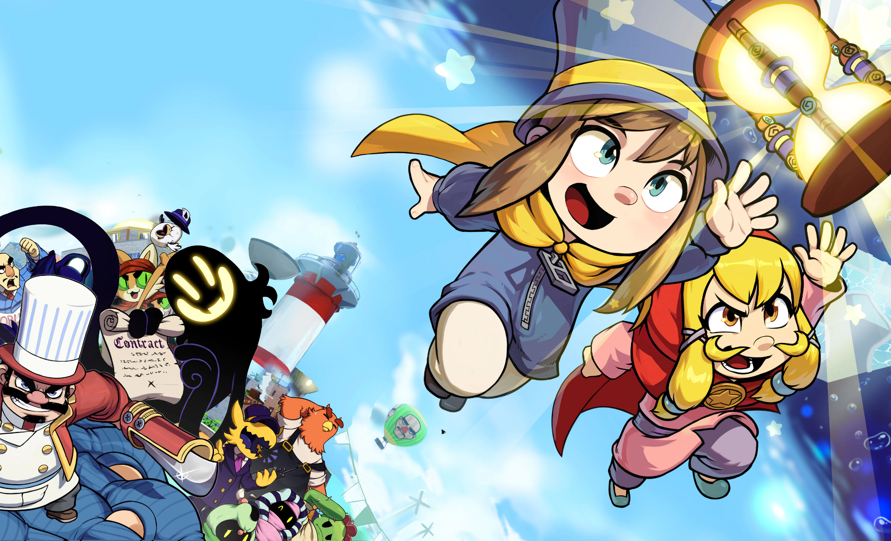
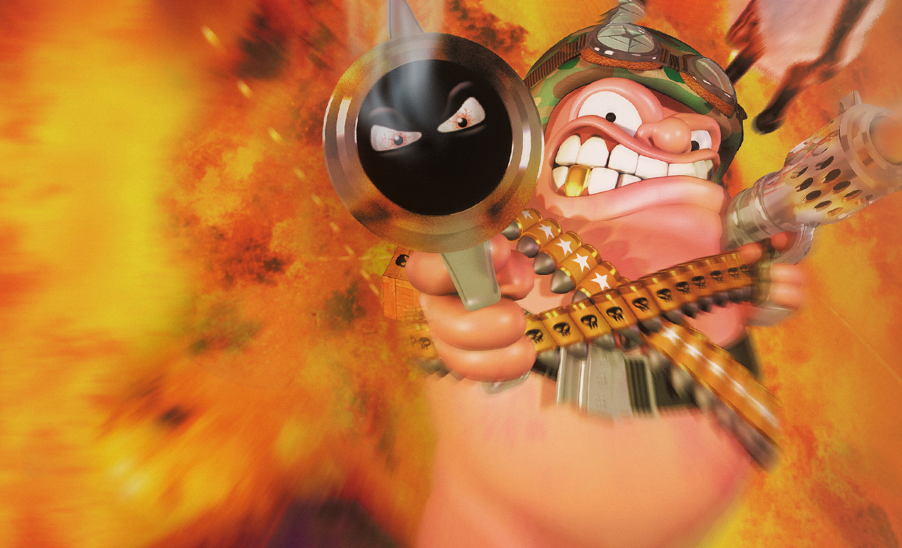

Introductie
Welkom allemaal. Ik ben Aissa. Ik ben 19 jaar en studeer Creative Media and Game Technologies bij Hogeschool Rotterdam. Sinds April 2022 werk in het Bravis ziekenhuis als keuken medewerker. Ik kom uit Bergen op Zoom en leef samen met mijn moeder, vader, zus, broer en een kat genaamd Morbius.
Hobby
Mijn hobby is gamen. Ik game best vaak en lang. Soms speel ik in mijn eentje games en andere keren speel ik met mijn vrienden op discord. Dat gebeurt meestal vanavond, omdat iedereen dan klaar is met hun avondmaaltijd.
Ik speel vooral games op steam. Zelden speel ik op een console.
Goede games
Hier zijn een aantal games die ik zelf leuk vind. Misschien dat ze ook iets voor jouw zijn.
-
 Celeste.
Celeste.
In deze 2D platformer speel je als een meisje genaamd Madeline. Je probeert Mt. Celeste te beklimmen, terwijl je in de tussentijd ook je angsten probeert te overwinnen. Het is moeilijk, maar nog steeds eerlijk en bewegen in de game voelt geweldig. -

A Hat in Time.
Een cute-as-heck 3D platformer game waarin je probeert om je time pieces terug te krijgen nadat ze van je ruimteschip zijn weggevlogen. De characters zijn geweldig en de levels zijn leuk. Een goede game voor als je iets schattigs wil spelen. -

Worms Armageddon.
Een multiplayer schietspel waarin je met je leger van wormen tegen je vijanden vecht. Er is een grote lijst van wapens en mappen waaruit je kan kiezen. Een intens maar ook grappige game om met je vrienden te spelen.
Als ik de games moest beoordelen, dan zou het zo eruit zien:
| Game | Cijfer | Celeste | 10 |
|---|---|
| A Hat in Time | 8 |
| Worms Armageddon | 9 |